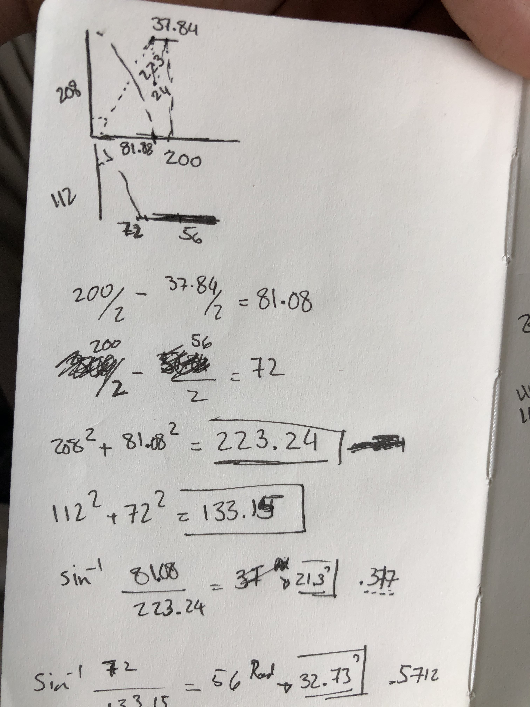

1) Make a lamp using measurements of lamp innards.
Picking up from where I left off last week, I had to change some measurements due to change of plans in the actual lamp I was going to use.
From the new measurements, I starting by laying out the Farsi letter “و” onto the surfaces by unrolling them from the master shape. After that, I created the middle joint that would connect the top my top and bottom pieces by splitting another hexagon at the intersection of the two pieces. I continued by creating yet another hexagon to use at the top piece connecting my lamp innards to the lamp shade. Screenshots below are pictures of my many failed attempts at each piece. Here’s a link to all failed 3dm, .stl, and gcode) files!
After many iterations, I was able to arrive at the solution shown below! Here’s a link to 3dm, .stl, and gcode) files!
2) Molding and casting (pt 1/2)!
My journey for deciding what elements to use for this design and what the design is going to be has been long, but certainly far from being complete … Here’s the progress so far!
I finally found the light bulb I’m designing for, but my friend has it since I was planning on returning it IKEA due to the amount of light it outputs!
But, I’m keeping the light bulb now that I can control the amount of light emitting through this light by designing the perfect lamp(well, hopefully!)
Light bulb size is approximately 200mmX400mm.
I’ve identified the main piece of my design, which is the Farsi letter و(v). And I’m committed to use grasshopper for most (if not all) of my design.
I started by creating its shape in Adobe Ai, and imported it into Rhino. The design idea I’m pursuing right now is using this letter as a way to join two polygon surfaces shown in the sketches below. Sizes and angles required are also shown in that sketch based on the measurements for the light bulb.

So far here’s a screenshot of where things are currently at!